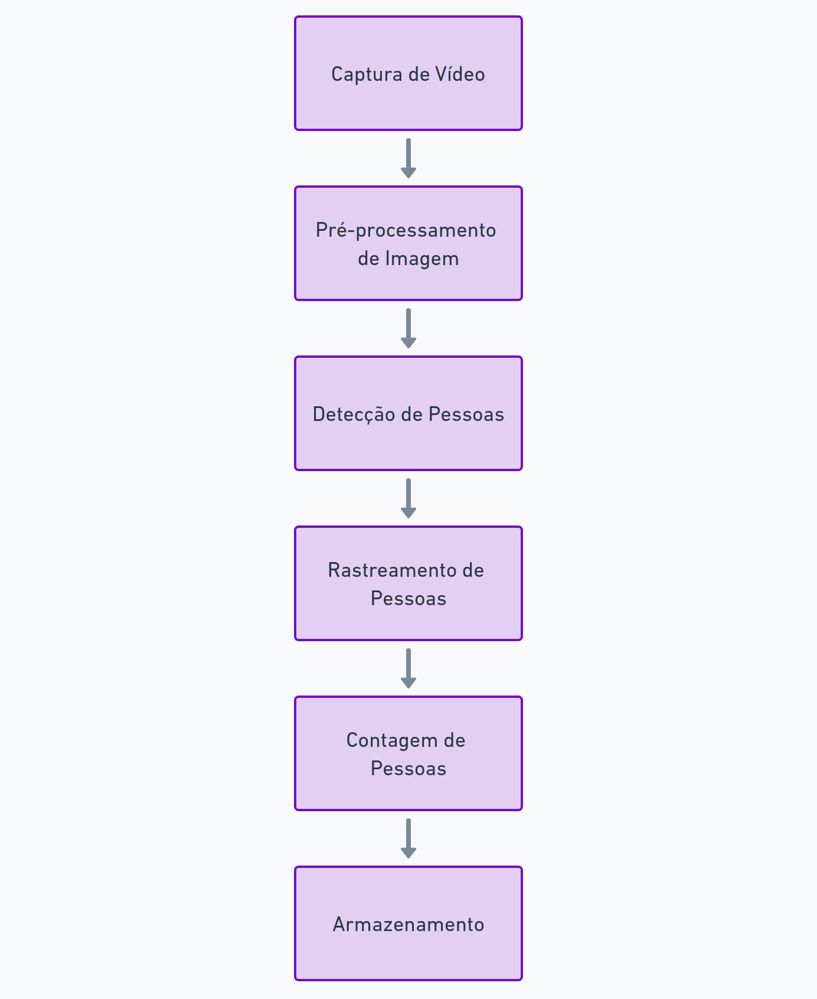
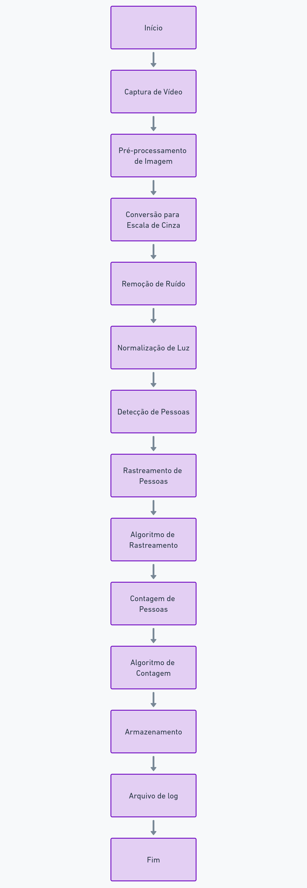

Introdução
Este documento descreve a modelagem funcional de um sistema de contagem de pessoas utilizando visão computacional com uma webcam. O sistema será capaz de detectar e contar pessoas em tempo real, fornecendo dados valiosos para análise de fluxo em lojas e eventos.
Visão Geral do Sistema
O sistema de contagem de pessoas consiste em várias partes funcionais que interagem entre si para capturar, processar e analisar imagens de vídeo em tempo real. As principais partes do sistema são:
- 1. Captura de Vídeo.
- 2. Pré-processamento de Imagem.
- 3. Detecção de Pessoas.
- 4. Rastreamento de Pessoas.
- 5. Contagem de Pessoas.
- 6. Armazenamento.
Diagramas Funcionais
Diagrama de Blocos do Sistema:

Figura 1: Fluxograma do Processo.
Descrição dos Blocos Funcionais:
1. Captura de Vídeo
- Entrada: Fluxo de vídeo contínuo capturado pela webcam.
- Saída: Quadros individuais de imagem.
- Processamento: Captura de frames em intervalos regulares a partir do fluxo de vídeo.
2. Pré-processamento de Imagem
- Entrada: Quadros de imagem capturados.
- Saída: Quadros de imagem pré-processados.
- Processamento: Aplicação de técnicas de pré-processamento, como conversão para escala de cinza, remoção de ruído, e normalização de iluminação.
3. Detecção de Pessoas
- Entrada: Quadros de imagem pré-processados.
- Saída: Coordenadas de detecção de pessoas (bounding boxes).
- Processamento: Utilização de modelos de visão computacional (como YOLO, SSD) para detectar a presença de pessoas nos quadros de imagem.
4. Rastreamento de Pessoas
- Entrada: Coordenadas de detecção de pessoas.
- Saída: Trajetórias de pessoas rastreadas.
- Processamento: Algoritmos de rastreamento (como SORT, Deep SORT) para associar detecções entre quadros consecutivos e manter o rastreamento contínuo das pessoas.
5. Contagem de Pessoas
- Entrada: Trajetórias de pessoas rastreadas.
- Saída: Contagem de pessoas.
- Processamento: Contagem de pessoas baseado no instante no qual a imagem da webcam está sendo processada.
6. Armazenamento
- Entrada: Contagem de pessoas.
- Saída: Log de dados.
- Processamento: Armazenamento de dados em um arquivo de log.

Figura 2: Fluxograma do Processo Detalhado.
Considerações Finais
A modelagem funcional apresentada oferece um detalhamento do funcionamento do sistema de contagem de pessoas através de visão computacional. Cada bloco funcional foi descrito com suas entradas, saídas e processamentos, auxiliando no entendimento do fluxo de dados e das operações necessárias para implementar o sistema. Os diagramas fornecem uma representação visual das etapas e das interações entre os componentes, facilitando a comunicação e a colaboração da equipe de desenvolvimento durante a implementação.
Referências
Como a análise do tráfego e contagem de clientes pode aumentar a lucratividade da sua loja? Disponível em: https://intradata.ai/blog/como-a-analise-do-trafego-e-contagem-do-fluxo-de-clientes-pode-aumentar-a-lucratividade-da-sua-loja/. Acesso em: 5 jul. 2024.
Contador de Fluxo - Venda. Disponível em: https://www.altervision.com.br/venda-contagem-de-visitas/?utm_source=google&utm_medium=cpc&utm_campaign=SD-conversoes-search-espec&gad_source=1&gclid=Cj0KCQjwv7O0BhDwARIsAC0sjWOi3yRCvG1b1hegy2vgyrD1AiKk_C-oFD0T-zlg_RUyt_-7h6PfyloaAsCsEALw_wcB. Acesso em: 5 jul. 2024.
COUTO, R. Contador de pessoas: Ferramenta indispensável para o seu negócio. Disponível em: https://www.novvasolutions.com.br/blog/contador-de-pessoas/. Acesso em: 5 jul. 2024.
DIMENSIONAL. O que é e quais são os benefícios da contagem de fluxo em lojas físicas? Disponível em: https://blog.dimensional.com.br/contagem-de-fluxo-em-lojas-fisicas/. Acesso em: 5 jul. 2024.